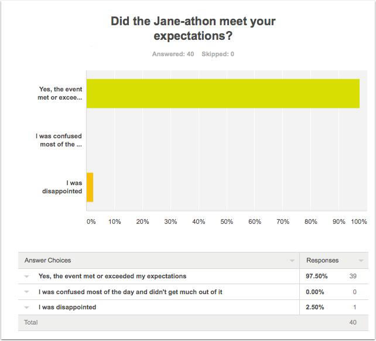
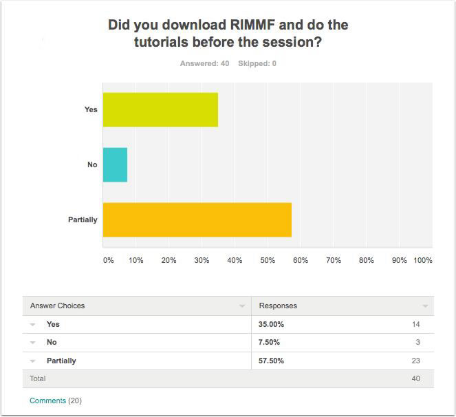
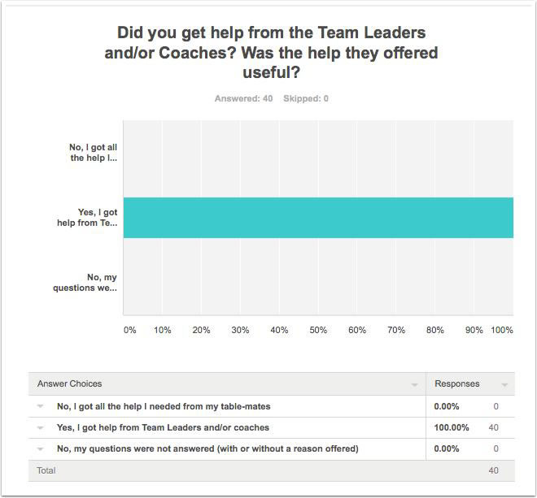
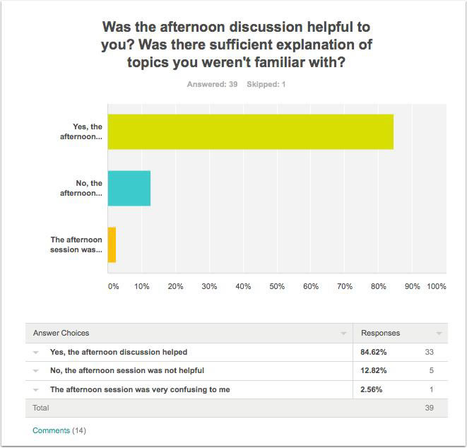
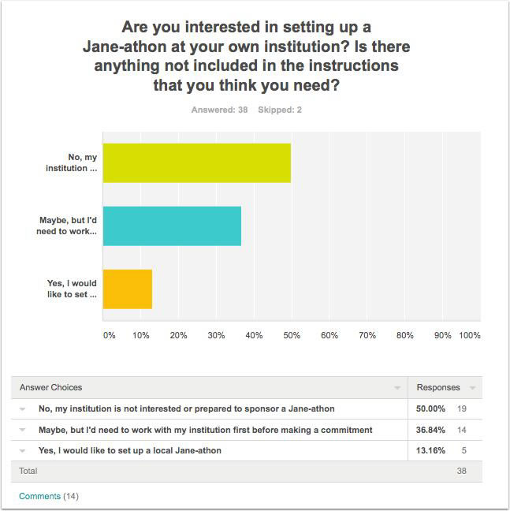
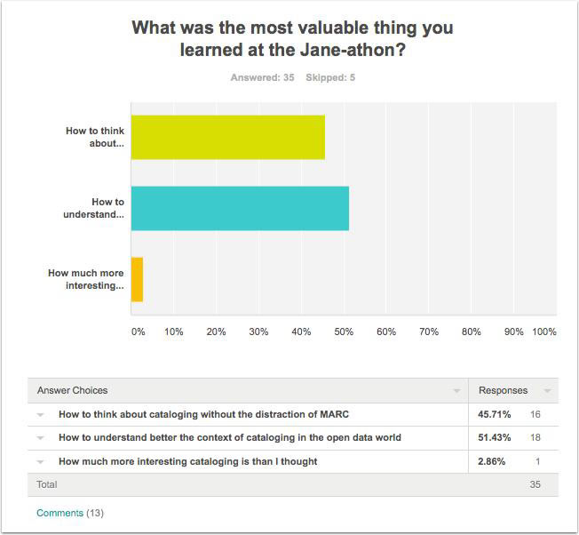
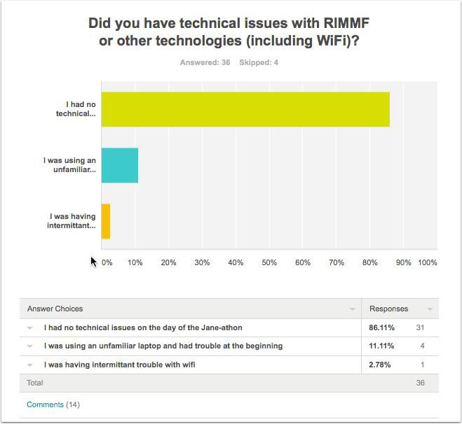
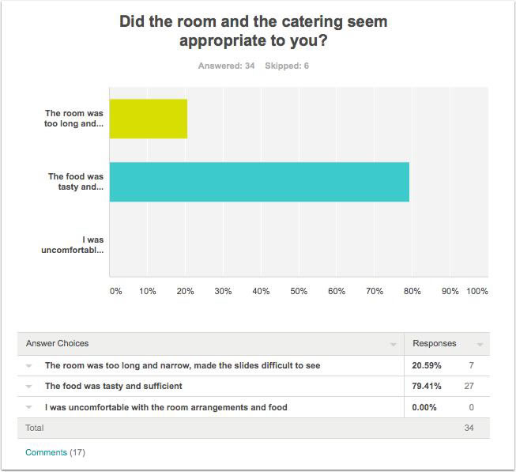
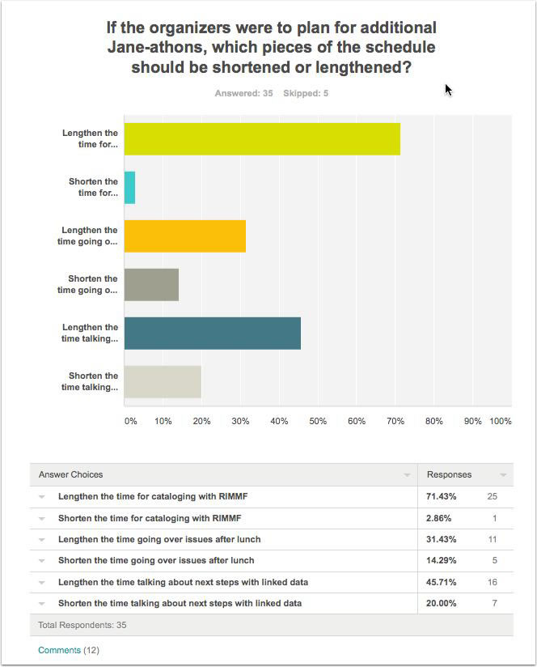
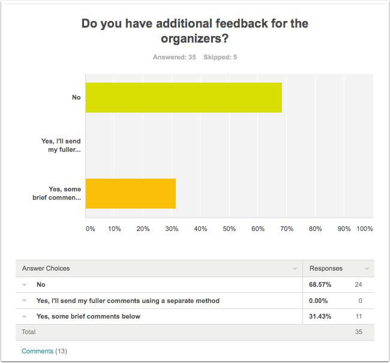

Home >
Summary of Participant Responses to the First Jane-athon
The response rate of the survey was approximately 70 percent (40 out of 61+)
Question 1
Did the Jane-athon meet your expectations?
Results

Selected comments
"I was looking forward to this event, and it was sooooo much better than I could have hoped! It was fun, and remarkably entertaining, as well as extremely helpful in beginning to understand RDA outside the MARC framework."
"This was an excellent preconference workshop, really inspiring. It was truly fun, somewhat confusing at times (as intended), but gave me new enthusiasm and hope for my profession. We will muddle our way through the chaos."
Question 2
Did you download RIMMF and do the tutorials before the session?
Results

Selected comments
"I got through about half of the tutorials, but that was entirely my fault. It was more difficult than I thought it would be. I think once the keystrokes were intuitive, it would be a lot easier. I did understand the overall concept, just couldn't keep track of the 'commands.'"
"I completed 7 tutorials...I was much happier and learned more working with actual items during the 'thon. Psychologically I just like to feel I'm producing something, not just tracing the lines. (That's a character flaw, a known bug in how my brain operates). :)"
"I downloaded RIMMF and went through the beginning of the tutorial, but found it more confusing than I expected. However, once I was in the room and could see it in action, I was able to figure it out really quickly."
Question 3
DId you get help from the Team Leaders and/or Coaches? Was the help they offered useful?
Results

Selected comments
"Everyone was super helpful! Whenever there was any confusion at my table there was a coach more then willing to help out."
"It was great to have people more familiar with the software at each table."
"Plenty of great help available."
Question 4
Was the afternoon discussion helpful to you? Was there sufficient explanation of topics you weren't familiar with?
Results

Selected comments
"The afternoon discussions were fantastic. I loved that I learned as much about RDA and FRBR as I did RIMMF and linked data. It was really wonderful to have so many RDA and linked data experts in the room and to be able to bounce ideas off of them. What I really valued from this event is that it made me really engage with RDA again as a model/method of cataloging/description. Not just "plug X thing into Y MARC field". Being able to step away from MARC really made it possible for me to view RDA and the FRBR model in a completely different way. I felt energized by this event. I felt a renewal of my passion for this kind of work and I don't know that there's other venues that can provide this kind of experience."
"The only constructive feedback I have for this section of the Jane-athon is that I would have liked for more time to be spend on looking at the R-ball that participants greatly enhanced. I would be nice to have more time to look at others work and go over some of the issues."
"Part of the afternoon session was incredibly helpful. Showing the aggregated rball -- looking at some of the choices that were made and asking people to comment was great. The interactive parts were excellent. However, the "lectures" that followed were not nearly as useful. Part of the problem was the lack of an understandable, useful product. So the data was transformed to RDF -- but it wasn't demonstrated in a useful way. And talking about the need to structure our data in a different way/move to new formats/think about data differently felt like preaching to the choir. We'd all spent 100s of dollars to be in that room, I'm pretty sure we're on board with trying new ways of creating/sharing data. The last 2 hours of the janeathon really went downhill quickly. They weren't interactive and ended the day with a whimper, not a bang."
Question 5
Are you inerested in setting up a Jane-athon at your own institution? Is there anything not included in the instructions that you think you need?
Results

Selected comments
"I absolutely would love to see this be a portable workshop event. I'm pretty sure I could do the rimmf parts, but would love to see some information about how to aggregate the rball. Also, I think the day needs to have a stronger finish. Something visual so that the participants can see just how their contributions can be reused/etc."
"I think I could set it up, but I would miss the expertise provided by the consultants."
Question 6
What was the most valuable thing you learned at the Jane-athon?
Results

Selected comments
"I just started learning cataloging six months ago, so am only familiar with RDA within MARC. Coming from an archives background, forgetting MARC was quite easy, fun, and comfortable (title is title - date is date!). I really enjoyed seeing the WEMI model in action with separate work, expression, and manifestation records. It really helped to clarify FRBR and RDA organization."
"RIMMF makes it easier to understand linked data. It is concrete instead of an abstraction or a horribly complex diagram."
"I don't think that the Janeathon really effectively addressed the context of cataloguing in an open data world, nor specifically describing resources as linked data (although, this is effectively what they could be). The Janeathon felt like a very practical hands-on session that sought to apply the WEMI model to resources - it would take another type of session to overtly take this into an open data world."
Question 7
Did you have technical issues with RIMMF or other technologies (including WiFi)?
Results

Selected comments
"I was thrilled that when I came across a bug, that Richard actually fixed it right then and there."
"I was using a borrowed laptop and trying to work from RIMMF on a flash drive. It crashed as I was trying to download a newer version of RIMMF, so I had to start over again. I then downloaded RIMMF on the laptop and it worked fine after that."
Question 8
Did the room and catering seem appropriate to you?
Results

Selected comments
"The room was fine from my perspective as I was sitting at the front. However, the tables were very close together and I experienced difficulty in hearing the conversation at my table above the conversations of other tables. Also, the proximity of tables meant that we were bumped continually when people were moving around between tables, and there were lots of exposed cables on the ground - so probably not great from an occupational work health and safety perspective."
"I thought the room was okay, but a bit crowded. I think the screen should have been centered to the room and the size of font on some of the examples larger."
"The slides were difficult to see, but not because of the room configuration. The material is dense, the records are long, I don't think they can be comfortably viewed at a distance."
Question 9
If the organizers were to plan for additional Jane-athons, which pieces of the schedule should be shortened or lengthened?
Results

Selected comments
"I thought the day was well balanced. I thought the 2 1/2 hour cataloging with RIMMF would seem like forever, but it went really fast! It did turn out to be a lot of fun, however I was mentally exhausted by the end of that time, so a longer period would have been too much at one time for me."
"was excited by the cataloging and got a lot out of if but the explanations didn't add much to the experience, especially since there was no linking back to what might be possible in a real-world situation."
Question 10
Do you have additional feedback for the organizers?
Results

Selected comments
"At my table, I had five people besides myself, plus a sit-in person who could not stay all day. I ended up with smaller groups within groups, and one person ended up working more alone than together. While other tables may not have had this problem, I would suggest that team leaders be given some direction on how to direct their people, so that no one ends up alone unless they want to be. Part of the point of this is the resulting discussion, and my one person didn't get that as much, I think."
"I really enjoyed my time at the Janeathon and got a lot out of it. I think it would've helped to set a different expectation going in other than "go through the tutorials"--there are a lot of tutorials, and they don't necessarily make sense until you're actually working with data yourself. I felt ill-prepared before things started because I didn't have time to explore RIMMF thoroughly, but once the day started I realized the webinar had been sufficient for me to feel comfortable. I was actually happier that I was unable to download RIMMF on my laptop and had to work with a partner, since we each brought up different questions and approaches to any small roadblocks we faced."
"*Thank you* to all the organizers and helpers. Despite a few issues, it was an amazingly helpful day. The tutorials are great and RIMMF in general is helping me reprogram my brain. I thought I knew RDA pretty well after cataloging with it for a few years--but I didn't."